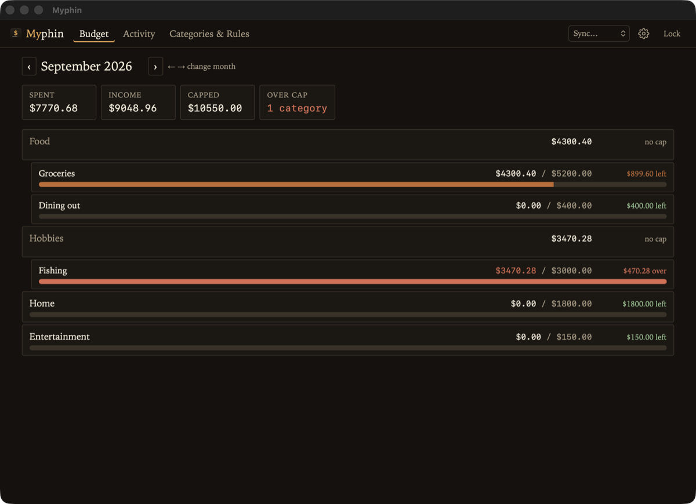
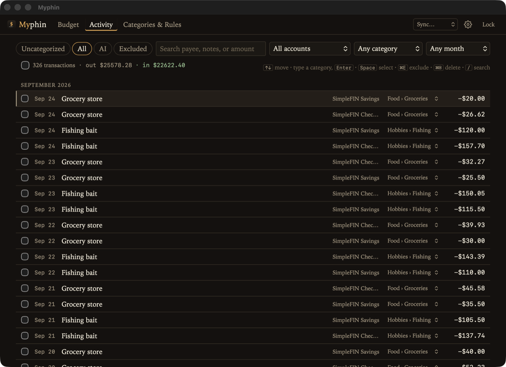
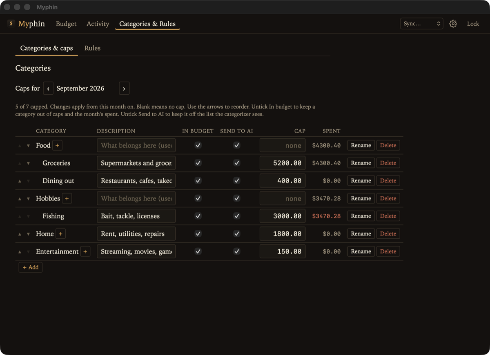
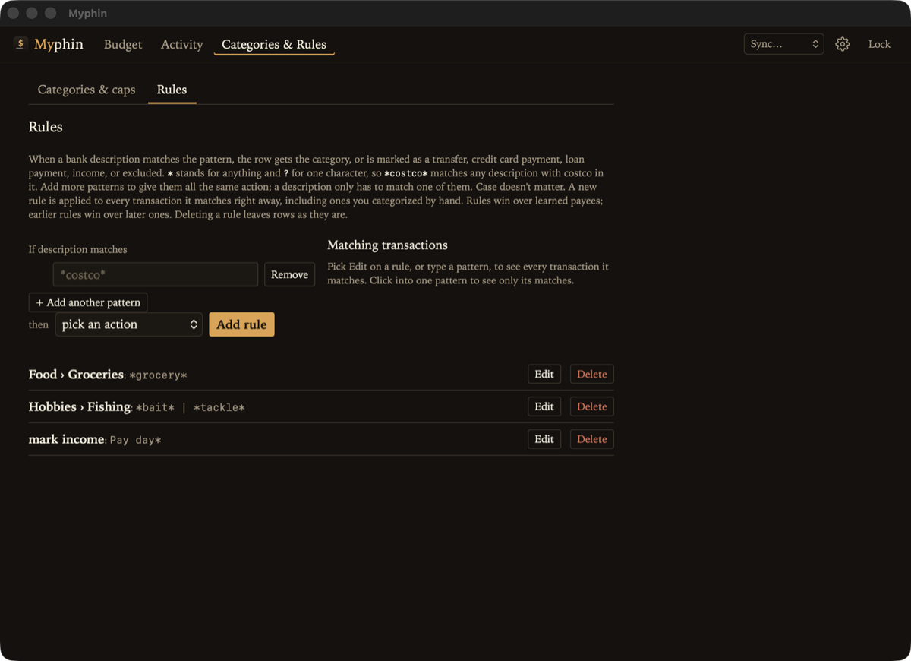
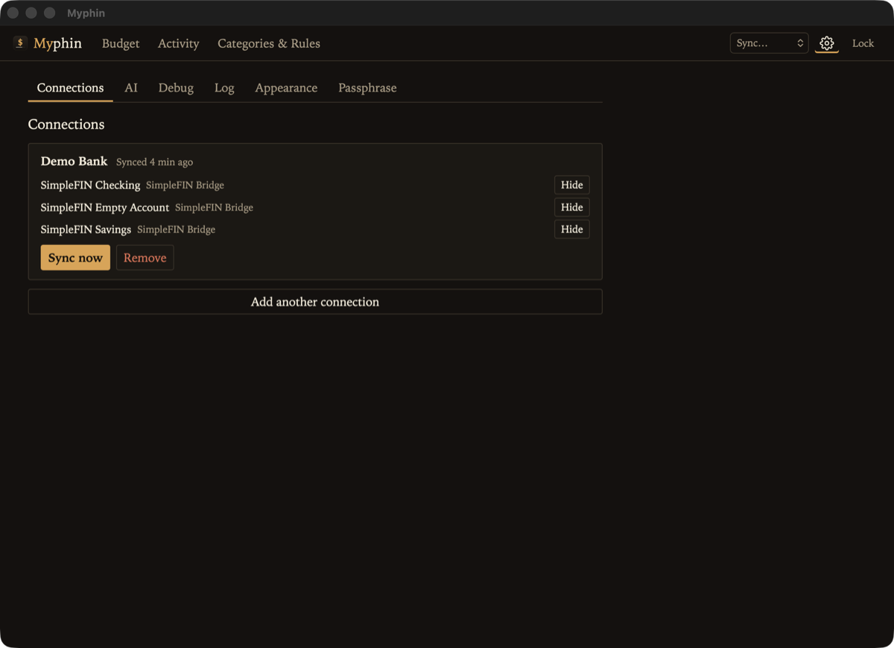

Myphin
A private, keyboard-friendly budget app that keeps your money data in a folder you own.
What it is
Myphin pulls in your bank transactions, helps you sort them into categories, and shows how each category is doing against a monthly cap. There's no account to sign up for and no cloud service holding your data. Everything lives in one encrypted file (ledger.enc), in a folder you pick, so you can put it in iCloud Drive, Syncthing, or wherever you already keep backups.
Transactions sync through SimpleFIN Bridge, which connects to many banks and card issuers. Sorting them is built for the keyboard: arrow through transactions, type the first few letters of a category, press Enter. Myphin remembers payees, and wildcard rules like *costco* → Groceries handle the rest.
Features
- Your data stays yours: a single ledger file encrypted with Argon2id and XChaCha20-Poly1305, and your passphrase is never saved
- Real bank data: connect banks and card issuers through SimpleFIN Bridge, then re-sync any connection from the top bar
- Fast to categorize: arrow keys, a category prefix, and Enter, with remembered payees so you rarely do it twice
- Rules: wildcard patterns that set a category or mark a row as a transfer, payment, income, or excluded, applied instantly to past and future rows
- Monthly caps: set a cap once and it carries forward; the Budget screen shows what's left and what's over at a glance
- Nested categories: one level of nesting (like
Food › Groceries), with parents rolling up their children's spending - Optional AI help: suggest categories for unknown payees using a hosted service or a model you run yourself, sending only the payee name and direction of money
- Themes: Ledger, Ink, Paper, or Newsprint
Screenshots





Getting started
You'll need Rust 1.93 or newer and the Dioxus CLI. macOS needs nothing else, Linux needs WebKitGTK, and Windows needs WebView2. Then:
cargo install dioxus-cli
git clone https://github.com/faulker/myphin
cd myphin
dx serve --desktopOn first launch, pick an empty folder and choose a passphrase. Write it down, since it's never stored anywhere. Then open Setup, paste a setup token from SimpleFIN Bridge, and sync.